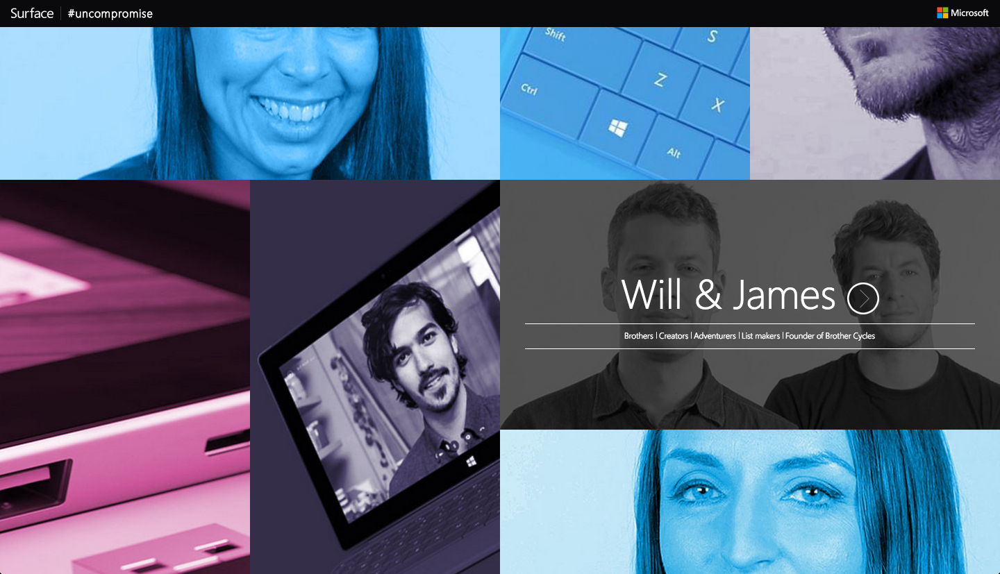
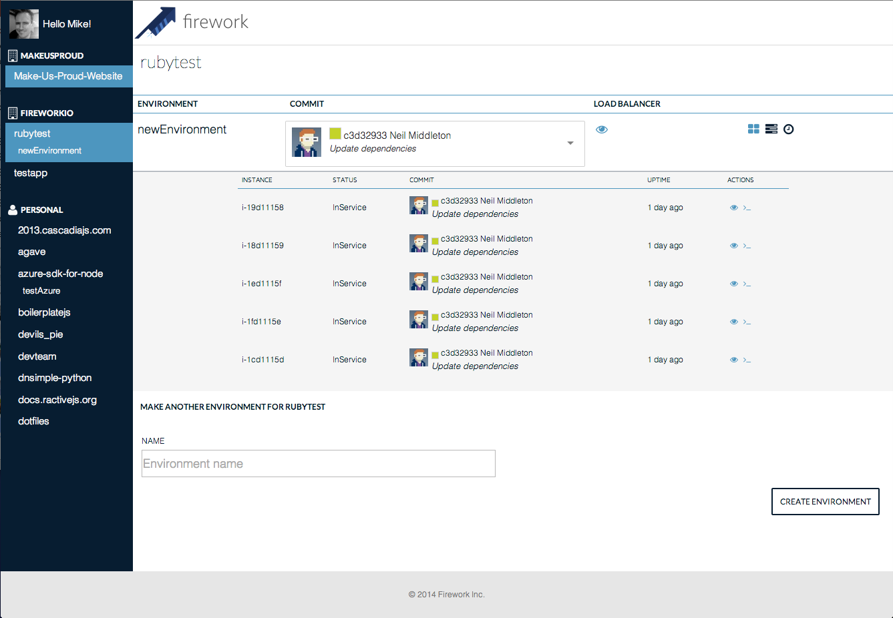
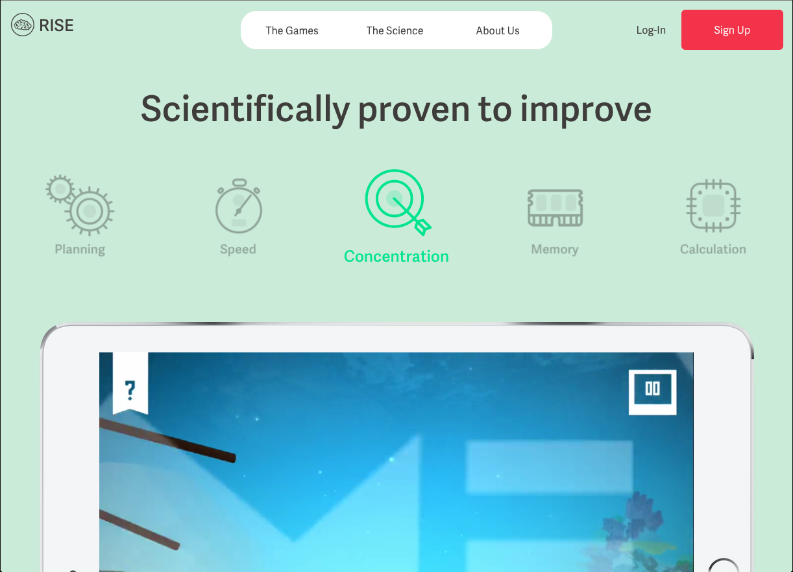
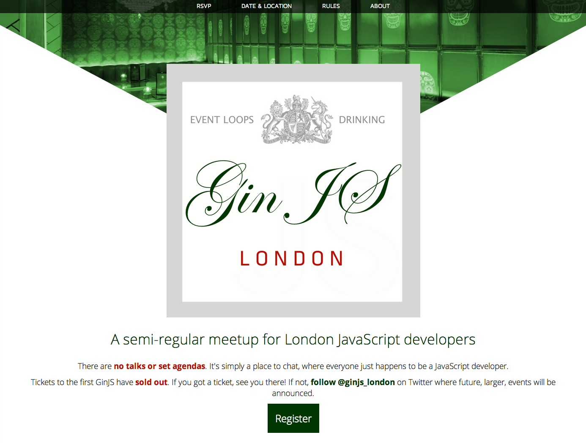
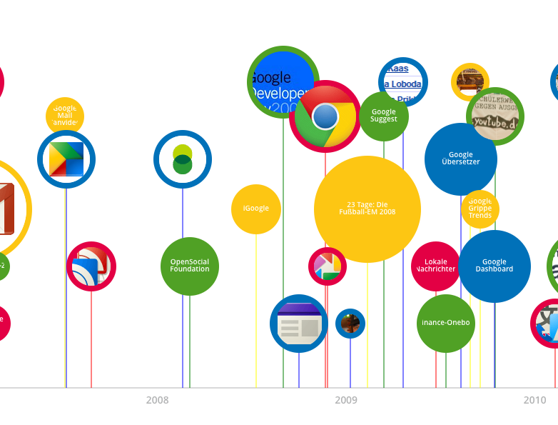
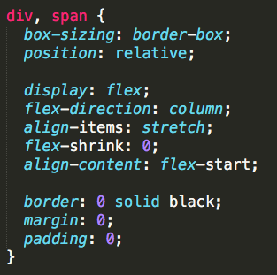
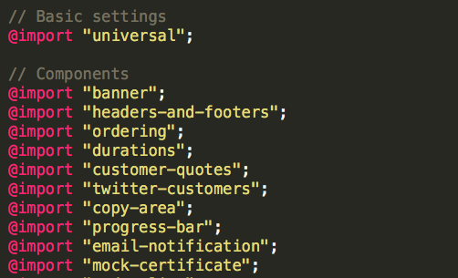
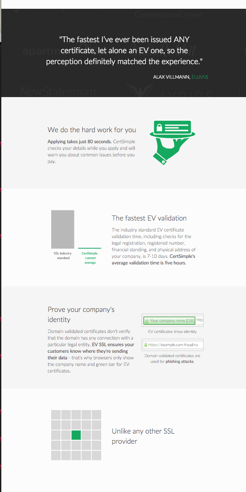

Yaay the projector works
You may need to zoom out a little if the text is too bigBurn Everything Down
& Use Flex
mikemaccana.com@mikemaccana
I'll tweet a link out to the slides after the talk.
@mikemaccana

Built stuff for Google, Microsoft,
and a whole bunch of startups.
CertSimple
Fast painless EV SSL
certsimple.com
How I currently style things
I hope it will improve your styling.
Evolution of a web developer
Stage 1
Style it till it works
Stage 2
Understand CSS, it's limits, and hack around them
Stage 3
Develop or use tools to manage complexity
CSS frameworks
What do we want?
Ability to move things and have them still look right
Change the look of elements without changing HTML
Be able to predict how an element is styled
Readable code
Bootstrap
Classnames example 'col-sm-4 m-b-lg'
classnames used for appearance
large, column, how many columnsappearance now determined in either HTML or CSSclasses contain element names
Default hacks on most elements
BEM
Overloads the existing term 'block' to mean 'component'
Repeats styling in class name, since a BEM 'block' or BEM 'element' often duplicate actual elements.
Assumes non 1:1 item / element mismatch
Frameworks generally make it worse
Appearance controlled in class names
Duplication
Can't predict a class name an element will use
Hacks everywhere
Seperation of concerns?
- Actually just seperation of technologies
- In JavaScript, this is the login button
- In HTML, this is the login button
- In CSS, this is the login button
Hacks
What do we mean by hacks?
Hacks are so common we
no longer think of them as hacks
- margin: 0 auto;
Nothing to do with margins - display: inline-block;
Not actually an inline-block
Suddenly whitespace matters
So font-size: 0; - display: table-cell
Not a table cell
Hacks are so common we
no longer think of them as hacks
- Empty table before: elements
- overflow: hidden;
Used to give a block layout - Reordering elements for mobile
Hacks slow us down
Noisy code
Cognitive overhead
Frameworks are fine for the companies that make them
Twitter is company with massive resources
and huge financial incentive to make its products
work for users on unmaintained browsers.
How does this tie in with Flex?
Flex isn't just another fix for CSS brokenness
Flex is a sensible default
- Flex means we can get rid of the hacks
- Getting rid of the hacks means
we can get rid of the frameworks - Getting rid of the frameworks
makes our code smaller and easier to manage
🔥
Stage 4
Abandon complexity
"the solution to being bad at writing big things, is to not write big things." - @seldo
AMAZING NEW FRAMEWORK:
Flex and SASS
as little as possible
Use Flex
Facebook css-layoutUse SASS
Have a small amount of general styles
Style everything else under their component
Use an element name if it exists
People will be able to guess it
section, button, footer, q, label, nav
If an element doesn't exist, add a class
.avatar, .feature, .status-badge, .breadcrumbs
Use SASS
Use a class name for what it is
Use SASS for what it looks like
Use SASS
Use SASS mixins to share behavior
Keeps visual control in stylesheet
No need to add HTML
Small overhead in compiled code is worth it
Styling links in the footer
bs-docs-footer-links text-muted
footer .links
Designing
Every ☒ in your design is a block element.
Decide how you want the block to flow and let flex do the work
Reflowing for mobile
Mobile

Desktop
CSS nth child, Flex row-reverse
Example
How do I put my product features beside each other?
.features, specify width, put them beside each other
Handling specificity - classes more specific than elements
Hence style things relative to their component
No 'container' or 'wrapper' divs
Flex means you shouldn't need to use these
If you are adding blocks that aren't in your design - containers, wrappers etc. - you are performing some kind of hack. This should evaluated.
What do we get
Higher signal-noise
Visual appearance is 100% in stylesheet
Know where in stylesheet to look
'footer .links'All styling is deliberate
not side effects of hacksThe point
Current web standards and preprocessors have what you want
Currently used in production on CertSimple
Questions?
@mikemaccanacertsimple.com